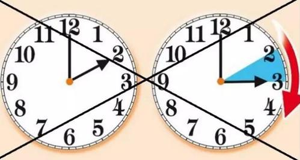
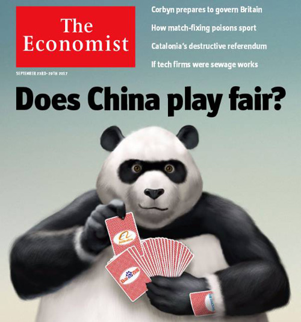

chapter19.2--handout
Background Information
Daylight Saving Time and Winter Time 夏令时和冬令时
我们今天的内容中有这样一个场景：Jake 回到西班牙（Spain had not changed to summer-time, so I was early. I set my watch again. I had recovered an hour by coming to San Sebastian. 那时西班牙还没有改用夏令时，因此我来早了。我把表拨回了一小时。来到圣塞瓦斯蒂安，我找回了一个钟头。）那么夏令时是什么？为什么Jake 要将表拨回一小时呢？
我们平常用的是格林尼治标准时间（Greenwich Mean Time），到了三月，就在格林尼治标准时的基础上拨快一个小时，新的时间就是夏令时。到了十月，又在夏令时的基础上拨慢一个小时，就形成冬令时了。
1. 地区和时间
目前，全球约有70个国家和地区实行夏令时和冬令时，欧盟从3月最后一个星期天到10月最后一个星期天实行夏令时。英国的夏令时是从3月的最后一个星期天开始，到10月的最后一个星期天结束。美国和加拿大从3月的第二个星期天至11月的第一个星期天实行夏令时。
2. 为什么要实行夏令时和冬令时？
在昼长夜短的季节将时间调快一个小时，有利于充分利用阳光，缩短照明时间，从而达到节能减排的效果。根据法国调查报告显示，2009年夏令时的实施节约了至少440亿度电，这相当于法国80万个家庭一年的用电量。同时，夏令时也旨在提醒人们早起早睡，养成良好的生活习惯，提高生活质量。
3. 不利影响引发争议
过渡时期那一个小时的时差会将人们的生物钟彻底扰乱，紊乱的生物钟将会使人们出现睡眠障碍，影响工作和学习，也会造成人体内分泌失调、免疫力下降，甚至出现中风。法国研究者发现，在冬夏时令交替之际，心脏病的发病率明显偏高，季节性忧郁症患者也明显偏多，自杀率也会上升，目前引起了广泛的争议。
4. 欧盟提议废止
欧盟委员会决定，欧洲将在2019年3月31日星期日最后一次拨动时钟的指针。欧盟主席提议欧洲从2019年起不再执行时令转换，但各成员可根据情况自行决定。对于决定保留使用夏时令的国家， 2019年10月27日星期日将不用进行调整。

现在的手机、电脑等智能设备一般都会自动更新夏令时和冬令时，所以大家去欧美国家也是不用担心的～
Vocabulary
apportion
v. 分配，分派（to divide sth among people; to give a share of sth to sb）
原文：It was a big meal for France but it seemed very carefully apportioned after Spain.
就法国来说，这顿饭菜是很丰盛的，但是吃过西班牙的以后，就显得菜肴的搭配非常精致。
这里说菜肴经过细致分配，也就是搭配得很精致的意思。
💧apportion 的名词形式是 apportionment，比如：The contract defines the apportionment of risks between employer and contractor.
合同规定了雇主与承包人分担的风险。
obscure
adj. 模糊的，不清楚的（not clearly understood or expressed）
原文：No one makes things complicated by becoming your friend for any obscure reason.
谁也不会为了某种暧昧的原因而跟你交朋友，从而使关系弄得很复杂。
💧obscure 还可以作动词，表示“遮掩，遮蔽”，比如：Trees obscured his vision; he couldn't see much of the Square's southern half.
树木遮挡了他的视线，南半广场的一大部分他都无法看清。
Crush Your Problems

There was a safe, suburban feeling. I wished I had gone up to Paris with Bill, except that Paris would have meant more fiesta-ing. I was through with fiestas for a while.
这里有一种身在郊区的安全感。但愿我和比尔一起回巴黎去就好啦，可惜巴黎意味着更多的寻欢作乐。暂时我对取乐已经厌倦。
💧表达精讲
①I wished I had gone up 是虚拟语气，这里是相对于过去的假设，所以使用了过去完成时（had gone up）; go up 指“北上，往北”（巴黎在San Sabastian的北边），而“往南”则是用down, 比如：They drove all the way down from Boston to Miami.（他们从波士顿开车南下一直到迈阿密。）
②fiesta 本义是“狂欢节”，这里加上-ing泛指一切狂欢作乐的形式和活动；
③be through with 表示“受够，厌倦了”；这个短语还可以指“和某人断绝关系”，比如：
That’s it! Simon and I are through.（结束了！ 我和西蒙已经完了。）


The season does not open there until August.
旅游季节要到八月份才开始。
💧表达精讲
①season 在这里指“旅游季”（tourist season）, 比如Jake提到“It would be quiet in San Sebastian.”以及“I could get a good hotel room and read and swim.”这两个细节都暗示了现在正是淡季。
②open 可以理解为“开始”（to serve as a beginning, commence）, 比如：The meeting opened with a call to order.（会议在正式宣布下开始。）

I drank a bottle of wine for company. It was a Château Margaux.
我喝了一瓶酒解闷儿。那是瓶玛歌酒庄的好酒。
💧表达精讲
company 在这里指“陪伴”（being with other people and not alone）, 可以理解为Jake为了打发寂寞感才来喝酒解闷。
💧知识拓展
Château Margaux 指“玛歌酒庄”，它是法国波尔多地区的一家一级酒庄。波尔多城所在的纪龙德省是著名的葡萄酒产区，其产品统称波尔多葡萄酒，具体名称则往往以酿酒商的大葡萄种植园命名。
Château 这个词在法语里本来是“古堡，城堡”的意思，相当于castle. 也可以指贵族或者比较有权势和金钱的人修的建筑或宅邸，比如凡尔赛宫的法文名就是“Château de Versailles”. 后来Château才开始用来指葡萄酒庄园。

It would be a sincere liking because it would have a sound basis.
这种喜欢是真诚的，因为有坚实的基础。
💧表达精讲
a sound basis 即指上文提到的“Everything is on such a clear financial basis in France. ”（在法国，一切都建立在这种赤裸裸的金钱基础上。）也就是只要给人以金钱上的好处，就可以建立稳定真诚的关系。

Out beyond where the headlands of the Concha almost met to form the harbor there was a white line of breakers and the open sea.
Concha的几个海岬几乎连了起来，形成了一个港湾，外面是一排白花花的浪头和开阔的海面。
💧表达精讲
①headland 指“海岬”，也就是从海岸延伸出来突入海中的狭长高地（an area of land that sticks out from the coast into the sea）;
②almost met to form the harbor 是指这些海岬几乎快连起来形成“港湾”；
③a white line of breakers “一排白白的浪花”，breaker指“拍打在岸上的白浪”（a large wave with a white top that rolls onto the shore）; break作动词就有“（波浪）迸溅，拍岸”的意思，比如：We sat and watched the waves breaking on the shore.（我们坐着看波涛拍击海岸。）

They came in like undulations in the water, gathered weight of water, and then broke smoothly on the warm sand.
过来的时候不过是波动的细浪，逐渐累积成浪头，最后和缓地冲刷到温暖的沙滩上。
💧表达精讲
①undulation 指“起伏，波动”（a smooth curving shape or movement like a series of waves）;
②gathered weight of water “逐渐累积成浪头”；weight of 可以理解为a large amount of, 比如：The weight of evidence is that unemployment leads to all sorts of health problems.（大量证据显示失业会导致各种健康问题。）这里形容细浪一层叠着一层最后累积成了大的浪头；
③broke smoothly on the warm sand “和缓地冲刷到温暖的沙滩上”；这里的break也就是我们在上一句讲解的“拍岸”的意思。
Content Analysis
在前往西班牙的San Sabastian之前，Jake停留在法国和西班牙交界处的Bayonne小镇（在前往Pamplona之前，Jake和Bill从巴黎坐火车来这里和从San Sabastian来的Cohn会合）。自从这些在西班牙的日子以来，Jake重新回到这座法国小镇，感受到了两个国家的氛围明显不同——
💧Clue 1:The difference between France and Spain is repeated.
Evidence 1:That made him happy. It felt comfortable to be in a country where it is so simple to make people happy. You can never tell whether a Spanish waiter will thank you.
这让他非常高兴。置身于一个这么容易就能让人高兴起来的国度，感觉很是舒服。你永远都搞不清一个西班牙服务生会不会感谢你。
Evidence 2: No one makes things complicated by becoming your friend for any obscure reason. If you want people to like you you have only to spend a little money.
没有任何人会出于任何一种含混费解的原因而成为你的朋友，把问题复杂化。你要是想让大家喜欢你，只需稍微破费点就行了。
从表面上来看，法国和西班牙最大的不同在于，在法国只要给人一点小恩小惠就可以获得好感，而且这种好感还是有坚实基础的（It would be a sincere liking because it would have a sound basis）. 比如这里Jake只是额外多给了服务生一点小费就得到了诚挚的感谢，这在西班牙则是很难得的。
从现实层面来看，在法国的这种简单直接的交流和相处方式，和实际生活其实有着很大的差距，因为很多时候付出和得到并不是等价的（意味着“有钱就可以得到任何想要的东西”这个逻辑是不成立的）。而西班牙更像是生活本身（represents life itself）, 存在着诸多复杂和不确定的因素（often difficult and unpredictable）. 基于这个差别，Jake也表示自己非常不愿意再回到西班牙，他希望能留在法国（I hated to leave France. Life was so simple in France. I felt I was a fool to be going back into Spain）.
再回到原文，今天的篇幅有很大一部分都是对Jake一个人在San Sabastian的描述。关于Jake为什么要来到这里，可能的解释是Cohn和Brett曾经一起单独到这里游玩。但Jake不是为了重温，而是在预演自己之后可能要面对的孤独生活——
💧Clue 2:Jake is rehearsing for the rest of his sorrowful life.
Evidence 1:I lay on the raft in the sun until I was dry. Then I tried several dives. I dove deep once, swimming down to the bottom.
我躺在大太阳底下的木排上，直到把自己晒干。然后我尝试着潜了几次水。有一次我潜得极深，一直朝海底游去。
Evidence 2: I walked around the harbor under the trees to the casino, and then up one of the cool streets to the Café Marinas...Later when it began to get dark, I walked around the harbor and out along the promenade, and finally back to the hotel for supper.
我在树荫底下沿着海湾走到赌场，然后选一条阴凉的街道朝“海滨”咖啡馆走去。咖啡馆里有一支乐队正在演奏……一直等天开始黑下来了，我才起身，沿着海湾走了一段，然后走上海滨的散步大道，最后回到旅馆吃晚饭。
除了游泳和潜水以外，Jake基本都在小城里到处闲逛（I walked around...I walked around）, 似乎隐约暗示了他对自己接下来生活的期待也是这样漫无目的地四处游走。唯一的亮点也许就是他遇到了一群来自法国和比利时的自行车赛车手。如果说斗牛是西班牙的国粹，那么自行车也就是法国人可以胜过西班牙人并且引以为傲的一项运动了：The Spaniards, they said, did not know how to pedal.（pedal是“蹬自行车”的意思）。
Today's Bonus
💧Foreign Journals 高阶学习者的必备外刊
我们今天的内容中有这样的场景：Jake在书报亭买了一份《纽约先驱报》，坐在一家咖啡馆里看起来。（At a newspaper kiosque I bought a copy of the New York Herald and sat in a café to read it. ）
New York Herald（《纽约先驱报》）是美国早期报纸。1835年由詹姆斯·戈登·贝内特在纽约创办。售价一美分。以通俗性为特色,宣称不支持任何党派,不充当任何派别或小圈子的代言人,热衷于报导暴力和道德堕落事件,因而招致同行与社会的批评,但仍旧日益兴旺。
今天我们就来一起了解一下还有那些优秀的外刊吧，大家日常的英语学习中也要多获取外刊资源来学习哦～
1. The Guardian 《卫报》
The Guardian 是英国的全国性综合内容日报。与《泰晤士报》、《每日电讯报》被合称为英国三大报。由约翰·爱德华·泰勒创办于1821年5月5日。总部于1964年迁至首都伦敦，该报注重报道国际新闻，擅长发表评论和分析性专题文章。
发展至今，《卫报》成了严肃的，可信的，独立的新闻的代名词，是一份定位于高端市场的主流大报。《卫报》还一直保留自己的左翼立场、高端市场和年轻读者优势。在英国，人们也把《卫报》戏称为愤青报纸。
2. The Times 《泰晤士报》
The Times 是英国的一张综合性全国发行的日报，是一张对全世界政治、经济、文化发挥着巨大影响的报纸。
《泰晤士报》隶属于鲁伯特·默多克的新闻集团。长期以来，《泰晤士报》一直被认为是英国的第一主流大报，被誉为“英国社会的忠实记录者”。《泰晤士报》在英国国内政治和国际关系问题上扮演了重要角色。在被默多克收购之后，有指《泰晤士报》的风格逐渐趋向保守。
3. The New York Times 《纽约时报》
The New York Times 是一份在美国纽约出版的日报，在全世界发行，有相当高的影响力，美国高级报纸、严肃刊物的代表，长期以来拥有良好的公信力和权威性。由于风格古典严肃，它有时也被戏称为“灰色女士”（The Gray Lady）. 它的创始人是亨利·贾维斯·雷蒙德和乔治·琼斯。
4. The Washington Post 《华盛顿邮报》
The Washington Post 是美国华盛顿最大、最老的报纸。1970年代初通过揭露水门事件和迫使理查德·尼克松总统退职，《华盛顿邮报》获得了国际威望。位于美国首都，尤其擅长于报道美国国内政治动态。
5. The Economist 《经济学人》
《经济学人》是一份由伦敦经济学人报纸有限公司出版的杂志，创办于1843年9月，创办人詹姆士·威尔逊。杂志的大多数文章写得机智，幽默，有力度，严肃又不失诙谐，并且注重于如何在最小的篇幅内告诉读者最多的信息。
杂志主要关注政治和商业方面的新闻，但是每期也有一两篇针对科技和艺术的报导，以及一些书评。杂志中所有文章都不署名，而且往往带有鲜明的立场，但又处处用事实说话。该杂志又以发明巨无霸指数闻名，是社会精英必不可少的读物。
